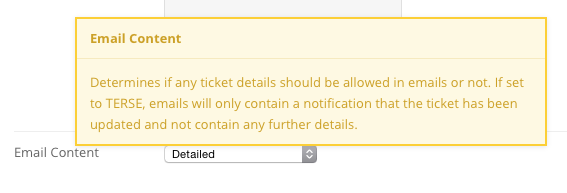

Hub managers
Support
Support is the hub's ticket tracking system. Members report a problem at
/support, the ticket lands in a queue, and support staff answer it,
reassign it, tag it, and close it — with every change recorded in the
ticket's log. The component also collects the abuse reports that members
file against comments and other content elsewhere on the hub. This chapter
covers the administrator's side; the Hub users
book covers submitting and tracking a ticket.
Open it under Components > Support. Eight sub-menu links run across the top: Tickets, Categories, Queries, Messages, Statuses, Abuse, Stats, and ACL.
Tickets
The Tickets screen is split into three panes. The left pane is your list of saved queries; the middle pane holds the tickets the selected query returns; the right pane shows a ticket you pick from the list.
Above the queries sits Watch list, with Open tickets and Closed tickets counts for every ticket you are watching. Below that are your query folders. Each folder and each query carries Edit and Delete links, and the two controls at the bottom, Add custom query and Add folder, create new ones. Folders and queries can be dragged into a new order, which is saved as you drop them.
The ticket list has a Sort results bar — Age, Status, Severity, Summary, Group, Assignee — and a Find box that searches within the current query. Each row shows the ticket number, its status (coloured with the status's own colour), the time of the last comment, any target date, the submitter, the summary, tags, group, assignee, and severity.
The toolbar offers Options, New, Delete, and Help. Deleting removes the ticket and everything attached to it; there is no trash to recover from.
Reading and answering a ticket
Clicking a ticket's summary opens it. The top of the screen shows the original report — which cannot be edited — with the submitter's name, Submitter e-mail, User type, OS / Browser, IP and Hostname, Referrer URL, Instances, the user agent string, and any files the submitter attached. Beside it are the ticket's status, Severity, Owner, Last Activity, and a Watch ticket / Stop watching button.
Below the existing comments is the response form.
| Field | Notes |
|---|---|
| (message template) | Pick a saved response from the list to fill the comment box; [custom] leaves it empty. See Messages. |
| Comments | The reply. Leave it blank to record only a change of status, owner, or tags. |
| Private | Marks the comment visible to staff only. It overrides every e-mail setting — a private comment is never sent to the submitter. |
| Attachments | Drag files in or click to browse. Size and type come from the component's Options, or the Media Manager's if those are blank. |
| Send message to | Usernames, user IDs, or e-mail addresses to copy, comma-separated. The value is remembered and pre-filled on the next comment. |
| Ticket submitter / Ticket owner | Checked by default; clear either to leave that person out of the notification. |
| Tags | Tags for the ticket, comma-separated. |
| Group | A group the ticket belongs to. With no owner set, the group's managers are notified instead. |
| Assigned to | The person who owns the ticket now. The list is drawn from the users and groups in the ACL, or from the group named in the Group option. |
| Category | One of the categories you have defined. |
| Target date for completion | Optional deadline, shown on the ticket in the list. |
| Severity | Critical, High, Normal, or Low. |
| Status | Grouped under Open and Closed. The open group lists your open statuses; the closed group starts with plain Closed and then your closed statuses. |
Press Save or Save & Close. Everything that changed is written to the ticket's log, along with who was notified.
New on the Tickets toolbar opens a shorter form for entering a ticket on someone's behalf: Login, Name, Email, Description, tags, group, assignee, severity, status, category, and CC.
Queries
The Queries screen manages the default queries every user starts with. Each has a Type:
- Common (in ACL) — a common query such as Open tickets or New tickets, given to users who hold support permissions.
- Common (not in ACL) — the same idea, but filtered so that a user only sees tickets they submitted, own, or that belong to one of their groups.
- Mine — queries about the logged-in user: Reported by me, Assigned to me, Assigned to me (closed).
- Custom — a query a user built for themselves.
Editing one opens the Query builder: a title, a set of rules matching any or all of the conditions, optional nested groups of rules, a sort field, and a direction. Conditions can test the owner, group, submitter, ticket ID, report text, open/closed state, status, created and closed dates, tag, type, severity, and category.
The toolbar adds Reset to defaults, which deletes every query and folder on the hub and rebuilds the stock set.
Categories
Categories organise tickets. The list shows ID, Title, and Alias; an entry has only those fields, with the alias generated from the title when you leave it blank.
Statuses
Statuses are the labels a ticket can carry. Filter the list by Status for — all statuses, open, or closed.
| Field | Notes |
|---|---|
| Title | Required. What the status is called on the ticket. |
| Alias | Generated from the title if blank. |
| For | Open tickets or Closed tickets. Setting a ticket to a closed status closes it and records the closing time. |
| Color | A colour swatch, picked from the colour widget, used to stripe the ticket in the list. |
Messages
Messages are canned responses that appear in the drop-down above the
comment box. Each has a Summary — the name shown in that list — and
the Message text. Four placeholders are substituted when the message
is chosen: {ticket#} and #XXX become the ticket number, {sitename}
the site name, and {siteemail} the site's from address.
Abuse
Abuse reports are filed by members against comments and other content across the hub. The list shows ID, Status, Reported Item, Reason, By, and Date, filtered by Show: Outstanding, Released, or Deleted. Opening a report shows the reported content and who reported it, with four choices:
- Release item — return the content to its normal state.
- Remove as Spam — take the content down and train the enabled antispam plugins on it.
- Delete item — take the content down, with an optional note.
- Decide later — leave the report alone.
Releasing or removing marks the report reviewed. Removal e-mails the content's author, and — where banking is enabled — credits points to the member who filed the report.
The Spam Check link beside the list runs a block of sample text past every enabled antispam plugin and reports what each one made of it.
Stats
Stats charts tickets opened against tickets closed by month, then breaks the totals down: opened and closed all time, average ticket lifetime, unassigned tickets, tickets by severity, and tickets by resolution. Below that is a card for each person tickets are assigned to, ranked by how many they have closed, with their own chart and average lifetime. Show for group narrows everything to one group's tickets.
ACL
The ACL grants support permissions to individual users and to groups. Each row is a user or group with Read, Update, and Delete on tickets, Create and Read on comments, and Create and Read on private comments; click a cell to toggle it. To add a row, type a username, user ID, or group name into Alias or ID at the foot of the table, choose user or group, tick the permissions, and press Add.
Group permissions are inherited by every member, and where a user belongs to several groups the highest permission wins. A permission set on the user directly overrides everything the groups give them. Super administrators pass every check.
Options
Options on the Tickets toolbar opens the component-wide settings: the group to draw assignees from, whether replies can arrive by e-mail, the addresses notified of a new ticket, whether e-mails carry ticket details or only a bare notification, abuse-report notifications, the attachment upload path, size limit and allowed extensions, and the IP blacklist and bad-word list used to screen submissions. Every option is listed with its values in the configuration reference.
Setting Email Content to Terse strips ticket detail out of every notification, which is what a hub bound by FISMA or HIPAA rules wants. When it is on, the Terse checkbox on the comment form is pre-checked; staff can clear it for a single comment.

The Permissions tab carries the actions from access.xml: the
component-wide Configure, Access Administration Interface, Create,
Delete, Edit, Edit State, and Edit Own, plus a per-object set for
tickets (view, create, delete, edit, edit state, edit own) and for ticket
comments and private ticket comments (view and create). These are the
platform-wide access rules; the day-to-day permissions that decide who
answers tickets live in the ACL screen instead.
API
Support exposes a full REST API — tickets, comments, categories, statuses, messages, stats, and a report of tickets that breach a service-level criterion. See the API reference.
Rewritten and checked against 2.4-main @ d48e29db14 on 2026-09-09.